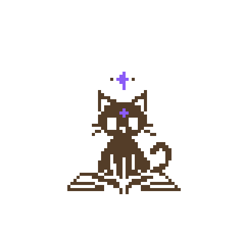
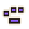

Misawantiga Fry (38M) is a small experimental language model trained from the ground up.
No API wrapper. No borrowed intelligence.
Just:

* DiaBench is a benchmark we made up in the kitchen.
* She was very tired during evaluation.
I asked for a business plan. Fry gave me "Mr_of_of_of_Ditto was spotted wearing a small café serving lukewarm tea." We pivoted to cafes. We're profitable in imaginary countries.
Elena M. — Novelist, blocked (in a good way)
Hallucination 97% is not a bug. I pay for other models to hallucinate. Fry does it for free, with artistic intent.
Milo — Professional Hallucination Enjoyer
We benchmarked Fry on Common Sense. She got 1.2%. We benchmarked her on Existential Dread. She got 89%. Finally, a model that understands academia.
Dr. Aris — PhD in Being Tired
Aha! Gotcha. There are 0 more. Fry made up 42.
